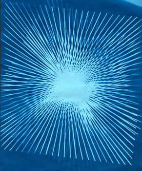
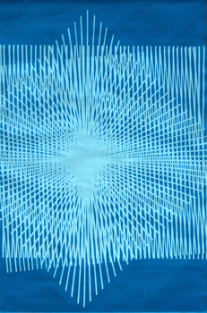
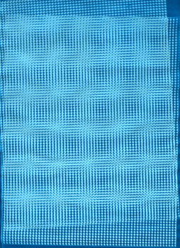
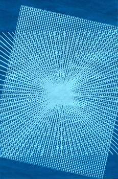
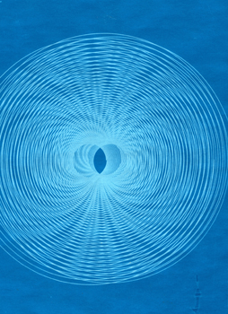
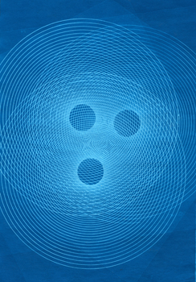
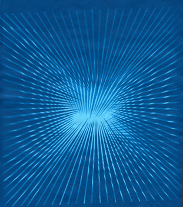

{kind=link}
two starbust diagonals
Time: 20 min to 1 hr
What you need:
• Sunprint paper
• Access to a printer
• Transparencies with patterns provided
• Sheet of cardboard
• Other flat objects (optional)
• Blank transparencies (optional)
• Sharpie
• Ruler
• Acrylic sheet
• Pan of water
I spent so much time testing this for the Activities page that I decided to write a blog post about it—and show off the prints as well! In case you haven’t already seen it, you can check out the activity page here.
Print out the moiré patterns you like best on transparencies (link to templates). I ran them through the printer twice to get the image dark enough—just make sure the edges line up!
Place the paper on the cardboard, the transparencies on the paper and the acrylic on top of everything. Put it in the sun and let it expose.
There’s a lot of room to play here! The most interesting part of moiré patterns is the way the elements interact as they move, creating a unique rippling effect. To recreate this on the static prints, I found that it was most effective to use three (or more) transparencies together, and leave them in place until full exposure. Definitely let your imagination run wild—moiré patterns are incredibly varied. Try creating your own starter patterns! Just draw them on blank transparencies with a ruler and sharpie.

{kind=link}
two line grids and one starburst diagonal

{kind=link}
two dot grids

{kind=link}
dot grid and starburst diagonal
I tried moving them to different places in relation to each other, to see how it affected the pattern.

{kind=link}
three spirals, small center

{kind=link}
three spirals, large center
For another twist, take off the transparency after the paper has exposed partway and put on another one, or shift the first one slightly. Or do both, or shift them multiple times until the paper is completely exposed (bluish white).
Or if you’re really looking to mix it up, try using other objects in addition to the transparencies. Put them on during only one of the partial exposures, or leave them there throughout.

{kind=link}
two starburst diagonals 2
Tags: Easy, science project, transparency